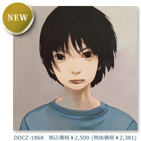

- 2013/05/18
- コメント追加しました。
- 2013/04/24
- コメント追加しました。
- 2013/04/23
- コメント追加しました。
- 2013/04/19
- ＜MUSiK Anatomia TOUR 2013＞第一幕、本日解禁！
- 2013/04/19
- コメント追加しました。
- 2013/04/17
- 「MUSIK Anatomia」発売記念インストアイベント開催決定！
http://kuh.jp/lime/1608716 - 2013/04/16
- コンテンツ追加！(#kuh0424)
- 2013/04/13
- 先行試聴会＆トークイベント開催決定！
http://captainhouse.com/event/sorahouse.html - 2013/04/03
- 特設サイト開設しました。
- 2013/04/03
- “MUSiK Anatomia” official trailer 公開しました。
- 2013/04/03
- MARQUEE Vol.96（4/10発売）インタビュー掲載。
http://www.marquee-mag.com
trailer
MUSiK Anatomia

- 1. Helix-go-round
- 2. Walkabout
- 3. the Daily Star
- 4. Nowhere Boy
- 5. 愛と喧噪のファンファーレ
- 6. ツキサガシ
- 7. E135°
- 8. ナイト・スイマー
- 9. Spinoza
- 10. TOKIO Nomad (3:00 a.m. Mix)
- 11. 雨よう日
- 12. 箱庭日記 (3月31日)
- 13. Tian - Lian
- 14. 5 Centimeters Is The Reason
comment
完膚無きまでのキラーチューン「the Daily Star」から「Nowhere Boy」までの流れ、どこかバカラック的佇まいのある「E135°」、センチメンタルさが心地好い「雨よう日」等等、ツボというツボを押されまくりです！
何なんでしょうか、この胸キュンを無性に掻き立てられる感じ！
最後のエモーショナルながら夢心地の「5 Centimeters Is The Reason」まで一気呵成に聴き干してしまいました！
音楽の魔法は確かにある！ 素直にそう思えたアルバムでした！
もう2013年の邦楽TOP3のうち1枚が決まりました！
椎名宗之 / Rooftop
再生ボタンを押す時に身構える必要は全然なくて、背伸びしないと届かないなんてこともない。耳に入ってきた時の、そのちょうどいいお湯加減の温かさがただただ心地いいのです。どこへでも持っていきたいくらい素敵な1枚！
芳川よしの / Yoshino Yoshikawa
誰しもオールタイムフェイバリットなアルバムは存在してると思います。例えば僕だったらMy Bloody ValentineのLovelessやMassive AttackのBlue Linesみたいな。何時聴いてもドキドキできたり、ハッとさせられたり、リラックスできたり、あの頃を思い出したり..。
そんなアナタのオールタイムフェイバリットアルバムに新たに加わるであろう1枚。僕は加わりましたっ！
USYN / MarginalRec.
I've found my missing piece
오래 전에 잃어 버린 청춘의 한조각을 다시 찾은 기분
ずっと昔に忘れてしまっていた、青春のかけらをまた見つけることができた気分
Neon Bunny (from KOREA)
誰の心も掴むようなポップさがありながら、ときどきクールに。セクシーに。。。そしてずっと根底にあるのが、「優しさ」これです。例えるならそれは、おいしいミルクのよう。毎日飲めます。毎日飲もう。辛くて苦い毎日にも、やさしくスッと溶け込んで、中和してくれるはずです。
オススメ→「the Daily Star」Aメロの進行にやられました。シンプルだけど魅せる！ kuhの真骨頂だと思います。
「雨よう日」日常的でやさしい、これもkuh的な曲と思います。タイトルがすごく好き。雨の日にぜひ聴きたい1曲。
「5 Centimeters Is The Reason」展開・メロディー・サウンド、これはヤバイ！ 必聴！
ヒゲドライバー
６年ぶりのkuhの新譜。。。悪いわけない！！！ "ポップなキャプテン"クボタ君節炸裂！ 優しい聞き触りの『アタタカイ音像』にプラスされる『エレクトロな音像』の奇跡の融合。これは、自分のような３０代はおろか、甘酸っぱい青春真っ只中な10代のキッズたちにこそ聞いて欲しい！！ 高校生の時にこれ聞いてたかったな～～～！！ 個人的には「ツキサガシ」や「雨よう日」の様なキュンと甘酸っぱい感じがオススメ！（まるでユニコーンさんの「自転車泥棒」を聞いてたあの時のようなノスタルジア！ ←この時点でおっさんw）もちろん「Spinoza」や「TOKIO Nomad」のようなエレクトロ系も大好き！ すなわち誰が聞いてもダイスキな音楽がここにはあるのです♪
橋本塁 / SOUND SHOOTER ＆ STINGRAY
どこまでも青く透明な、しかし逞しいメロディー。 「もう未来しか見えない」 少年の眼差しが、そう訴えかけてくる。 このアルバムを聴くと、気恥ずかしくなるが、僕は自分の「あの頃」を思い出す。
増田俊郎 / MarginalRec.主宰, PICNIC代表
めちゃ良い！！ kuhのチョ〜お待たせな（笑）新作『MUSiK Anatomia』に対する個人的な想いを書かせてもらうと、この作品には『僕の知ってるクボタ』と『僕の知らないクボタ』、そのどちらもがあまりにしっかりと居たので、聴いてて思わず「ムフフ♪」となりました（笑） だってここには、おフランス野郎もEDMもアイドルもエモも、み〜んな同居してんだもん（笑）こういうポップ・ミュージック、今までありそうでなかったんじゃない！？ それと同業者として「ありそうでなかった」っての、こいつぁ〜強敵だなと（笑） とにかく「すごくいい」ってこと。こういう音楽をみんな待ってたんじゃないかな。そして何よりkuhのみなさん、新作リリースおめでとう！！！
マシータ / ホテルニュートーキョー, TOQUIO LEQUIO TEQUNOS, ヒグチアイDUO
ドリーミーな音と甘く切ない声、初期衝動的とも言えるような青さ、時折見せる危うさ。
それがさわやかで、こそばゆくて、そんな不思議なアルバムです。
まったりと聴き始めてもうっかり泣いてしまいそうな「the Daily Star」がとても好きです。
fu_mou
旧友がアルバムを出す。ライバルだし一番のファンだと思ってるから旧友のキャリアに対して苦々しく思っていた時期がある。その才能を間近に見て来たから支持される度に余計に疑っていた。そんな旧友がやっとまた自分の出したい音を出し始めたと聞いて心が躍った。すぐに聴いてみる。あの頃、俺の部屋でペット・ショップ・ボーイズを聴かせてくれた記憶がフラッシュバックする。お互いの好きな音楽を交換していたあの頃。あれから色んな事があった。お互い見ている風景はあの頃と少し違うかも知れないけど、それでも俺の耳元で聴こえているこの声とメロディは何も変わらない。旧友の名は久保田匡彦という。俺はやっぱり彼のファンだ。
奈部川光義 / ATATA
少年感。ワクワク。開放感と爽快感。通して聞くとほっこりするけど前向きになれる青春映画を観た後のような満足感。あと何となく「kuh」という名前がすごくしっくりくる音でした。晴れた日の午後に外で聞いたらハッピーになれるヾ('ω')ﾉﾞ
PandaBoy
このアルバムは青春の甘酸っぱい香りがプンプンして、胸がきゅーってなります。その感じこそが僕の好きな懐かしいPOPS感！
それだけなら普通に好きー！なんだけど、それだけで終わらせないナウなkuhのセンスがキラキラ光ってて最高なのです！日本人ならキュンとくること間違いなしの素敵な一枚です！流石です、先輩！
竹内サティフォ / 竹内電気
だれかに頭をぽんぽんとされたときのような気分。幸せだったり、ドキドキしたり、心がきゅっとしめつけられるような切ない気持ちになったり。いい意味で複雑になる、日常のスパイスになるようなアルバムでした。いつも優しいkuhのおにいさん達にしかつくれない、素敵な音楽をありがとうございます！
あ、「the Daily Star」のPVは必見ですよ♡！！！ ね！！ クボタさん！！(宣伝)
木村ミサ
再生した瞬間に聴かせてあげたいって思える身近な人がパッと浮かんでくるのはとても大切なことで、kuhのポップで輝いた音楽は紛れもなく、それでした。早くあの人にも聴いて欲しいな。てゆうか、すっごくキラキラしてるのに、なんでこんなに切なくなるんだろう。めちゃめちゃ好みの音楽でした。
ピエール中野 / 凛として時雨

6年もの歳月かかって出来たアルバムがこんなに新鮮に聴けるのはクボタさんの生み出す普遍的なポップネスの強さのせいだろう。次々と新しい音楽が生まれ消費されてく現代で、10年後にもきっと手に取りたくなるアルバム。待ってましたよ！
大久保潤也 / アナ
とっても甘酸っぱくて、直球なメッセージ性があってちょっと大人になった僕にはなんだかムズムズする。
でも、そんなところがkuhの確信犯的な魅力なんだなって思った。
危なくて優しくて切なくて懐かしくてちょっぴり挑発的な
１０年代に聴くべき名盤が一つ増えました。
内田聡一郎 / vetica

タダさんはああみえて結構なSの人です(僕はドMなので相性がいい)。Sの気持ちを知るタダさんがいるからこそkuhの音楽はこんなに優しいのだと思います。
こんな素敵なアルバムに僕なんかがコメント書いてごめんなさい。タダさんのことばかり書いてごめんなさい。
辻友貴 / cinema staff
大都会のキラキラ感に交差する地元の山とか海とかみたいなドキドキ感。
こんなおセンチな世界観、もはやワールドスタンダード！
僕や私や彼や彼女の毎日を彩るテーマソングになり得るでしょう。
クボタさん＆ヒロさん、いつもsoulkidsのサポートギターでよっちをお借りしております。
ツアーでは僕らがサポートする番です。いつでも脱ぎます。
柴山慧 / soulkids
kuhのヒロちゃんとは相模湾コネクションで20年近くの仲ですが、今回の作品集で初めてヒロちゃんのほうから「聴いてよ〜！」と言ってくれました。きっと自信作に違いないと思いつつ聴かせてもらったらその通りの出来だったので嬉しくなってしまったよ！（自由参加ルールがまだ有効だったらいつか混ぜてっ！）
鈴木秋則 / ex.センチメンタルバス, SKAFUNK

「ムジーク・アナトミア。」
いいねぇ~。杉田玄白と前野良沢がかつて江戸の世に編算した「解体新書」。
今、kuhの面々が平成の世に「音楽版解体新書」として蘇らせてくれましたネ。
「うん。秀逸！！の一言」
中元★誠治 / オール・オーディナリーズ代表
幸せなのに締め付けられるようなこの切なさ…ズルい！ そしてもう一度再生。一度聴いたらこのループです。
カトウタロウ / TOQUIO LEQUIO TEQUNOS, Albarino, THE MAD
６年ぶりとか言って～～、外タレかよっ！っとツッコミたくなるクーちゃん（犬かよっ！）の新譜！ んでも待たされたのは当然のサウンドで届けてくれましたね～ こりゃ～！いいよ！いいんだよ！前作からの間にメンバー個人個人のさーあー、活動がさーあー、曲やアレンジやサウンドに完全に反映されててさーあー、宇宙的コズミックピコピコとさーあー、BANDのさーあー、土臭い感じとかさーあー、流石にまとまってるの！（以上平野レミ風）一曲一曲の世界観や物語的なアレンジやメロディー、そしてアルバム全体の世界観はまさにクーちゃんのこだわり満載だね！しかし、時折みせるぶっ飛んだ音を聴くと、やはり彼らはメガネをかけた音暴力団である。
MASAKAZU ICHISE / ASPARAGUS
クボタマサヒコのソングライティングここに極まれり！
popcatcher、BEAT CRUSADERSを経て、kuhの今作「MUSiK Anatomia」は極上のポップアルバムである。
点と点がすっと繋がって、今ここにいる、と音に込めた様な、そんな風にすら思える。
きっとこのアルバムが発売される頃には、桜前線は行ってしまって、
温かな春の真ん中にいる僕達に、素敵なポップソングを届けてくれるんだと思うと、
この国の、春における、あの忌々しい、花粉すら忘れ、本来の春の喜びが、ほんのり鼻を掠める様な。
そんな14ページの解体新書（Anatomia）を携えて、外へ飛び出したくなる衝動が、今にも溢れ出してしまいそうだ！
石川智史 / STUDIO OLIVE店長兼OLIVE DISTRO代表, MORETHAN
kuhのニューアルバム！お待たせされました！ワクワクしました！自然に笑顔になりました！ウキウキしました！ハイキングに行きたくなりました！
廣山哲史 / RYUKYUDISKO, TOQUIO LEQUIO TEQUNOS
新宿にLIQUID ROOMがあって、
恵比寿にMILKがあって、
渋谷にGIG-ANTICがあって、
そんな最高に刺激的だった時代と、
それらがなくなった後から今まで。
過去と現在を繋ぐアルバムなのです。
もうそんな風に言い切ります。
あんまり詳しく書くと陳腐になるかもしれませんが、
何言ってんの？ と思われたら癪なんで詳しく書きます。
『過去』は主にソングライティング。
kuhでクボタが創り出すメロディーと付随するコードは、
同世代の我々にあの時代を思い起こさせるのです。
これはモチのロン古くさいと言ってる訳ではなくて、
なんだか切ない、甘酸っぱい、胸キュン、
そんな思いを抱かせるクボタの音楽は、
あの時代に完成されてたのです。
もうそんな風に言い切ります。
『現在』正確には『現在まで』ですが、これは主に音作り。
前述の『過去』の一時代が終わった後、
我々はBEAT CRUSADERSというバンドで、
長い間一緒に音楽に携わることになるのですが、
レコーディング中にふとクボタの頭の中に産まれる、
数多くのフラッシュアイディアの中にエレクトロニクスな、
ここまで書いてですね、
聴き手には関係ないところで、
無意味な詮索をしてるようで、
やっぱり陳腐だなと思い始めておりますが、
全部消すのも癪なので続けます。
そのクボタのエレクトロニクスが、
切ない、甘酸っぱい、胸キュンを助長する訳です。
『過去』と『現在』が繋がったのです。
以上のようにkuh 及びクボタのことを、
したり顔でお送りして参りましたが、
今回のアルバムはワタクシの知らない意外な面、
新しいエッセンスが随所に盛り込まれておりまして、
それらはBEAT CRUSADERS 散開後からの要素なのでは？
そんなふうに思っておるわけなんであります。
だから無理矢理時間軸にあてはめるとしたら、
『現在』の中に含まれるか…いやここまで来たら、
これからも安心の中に散りばめる意外性を期待して、
もうこれは『未来』なのです！
もうそんな風に言い切ります。
これは過去と現在と未来を繋ぐアルバムなのです！
ケイタイモ / WUJA BIN BIN, ATOM ON SPHERE
live
＜MUSiK Anatomia TOUR 2013＞ ■第一幕
- 5/24 (金)
- 静岡・沼津 Quars
- 5/25 (土)
- 大阪・北堀江 club vijon
- 5/26 (日)
- 愛知・名古屋 CLUB ROCK'n'ROLL
- 6/16 (日)
- 福岡・福岡 Early Believers
- 7/15 (祝)
- 宮城・仙台 PARK SQUARE
- 7/27 (土)
- 東京・青山 月見ル君想フ
- 8/14 (水)
- 徳島・徳島 CROWBAR
- 8/15 (木)
- 香川・高松 MONSTER
- 8/16 (金)
- 愛媛・松山 SALON KITTY
to be continued…!!
第二幕は近日発表！
kuh
{kind=link}
クボタマサヒコ(vocals, guitars, bass, synthesizers, programming)
ヤマモトヒロ(drums, percussions, chorus, programming)
タダヨシフミ(guitars, synthesizers, electric piano, vocals, programming)
2002年、クボタマサヒコ(ex. BEAT CRUSADERS)、田中ユウスケ(Q;indivi)とゆるやかに発足。当初、自由参加のユニット的なプロジェクトとしてスタートし、現在のメンバーに。2007年、1stアルバム『KY!』リリース。エレクトロニクスとアコースティックがゆるやかに融け合うPOPミュージックを奏で、テクノ系クラブイベントからエモ系のライブイベントまで、幅広く活動する神奈川出身の3人組。
POPでありながら、多彩で丁寧な音作り。さすが、クボタマサヒコ。名盤！
乙武 洋匡